Contents
Coordnates Track Generation
@Author Brett
close all;
clear;
clc;
plot_step_scale = 10;
Datasets
data_size = 1:10; set = {}; data = []; %SET 1 %lat data = [data; sqrt(data_size)]; %long data = [data; data_size]; %bearing data = [data; sin([data_size])]; %save data to data columns data = data'; set{length(set)+1} = data;
%SET 2 data = []; %lat data = [data; sqrt(2*[data_size])]; %long data = [data; data_size ]; %bearing data = [data; cos([data_size])]; %save data to data columns data = data'; set{length(set)+1} = data;
Load RAW Data
filename = 'matlab.mat'; fprintf('Loading Dataset: %s\n', filename); load(filename) set = {}; for c = 1:min(size(position)) col{c} = position(:,c); end col{1} = col{1} - min(col{1}); % Dataset #1 data = [col{3}, col{4}, col{5}]; set{length(set)+1} = data; % Dataset #2 data = [col{7}, col{8}, col{9}]; set{length(set)+1} = data;
Loading Dataset: matlab.mat
Plot Data (Single Track)
for s = 1:length(set) data = set{s}; step = ceil((1/plot_step_scale)*length(data)); fprintf('Plotting Dataset %.0f\n', s); for t = 1:step:length(data) figure('units','normalized','outerposition',[0 0 1 1]); plot(data(:,2), data(:,1), '-b', ... %track points Xlat, Ylong data(1,2), data(1,1), 'og', ... %starting point data(end,2), data(end,1), 'or', ... %ending point data(t,2), data(t,1), 'ok'); %current time xlabel('Longitude'); ylabel('Latitude'); axis square; axis equal; title(sprintf('GPS Position of %.0f', s)); end bearing_size = col{1}; %1:length(data(:,3)); for t = 1:step:length(data) figure('units','normalized','outerposition',[0 0 1 1]); plot(bearing_size, data(:,1), '-b', ... %bearing over time bearing_size(1), data(1,1), 'og', ... %starting point bearing_size(end), data(end,1), 'or', ... %ending point bearing_size(t), data(t,1), 'ok'); %current time xlabel('Time (Seconds)'); ylabel('Bearing'); title(sprintf('GPS Bearing of %.0f', s)); end end
Plotting Dataset 1 Plotting Dataset 2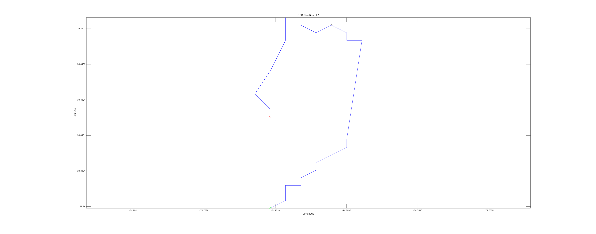 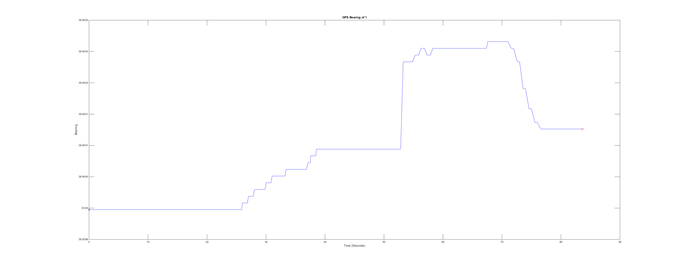 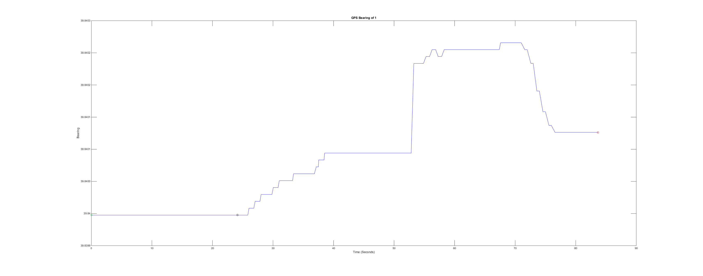 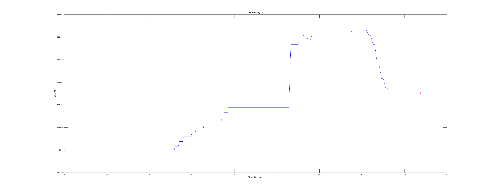
 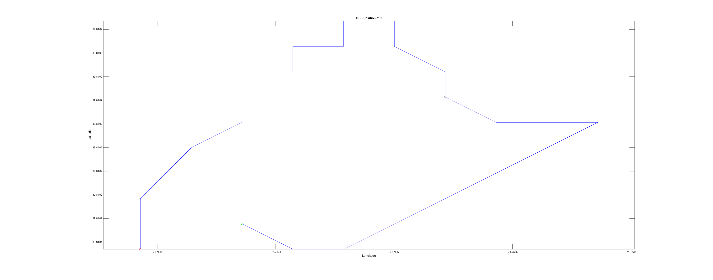 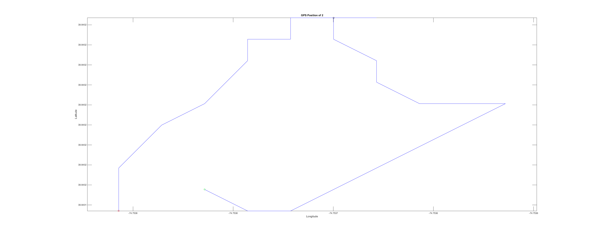 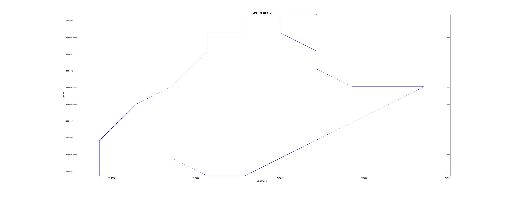 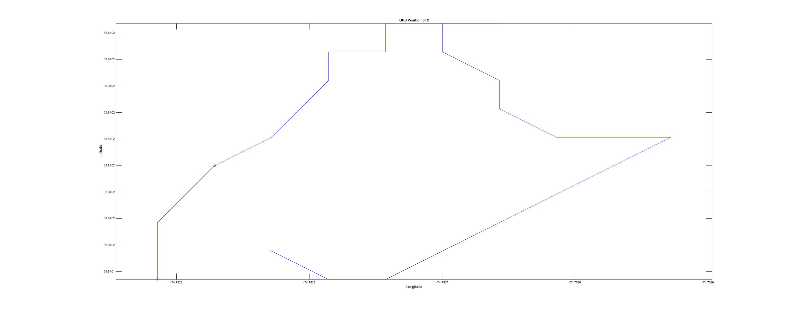 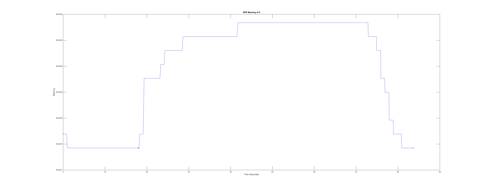 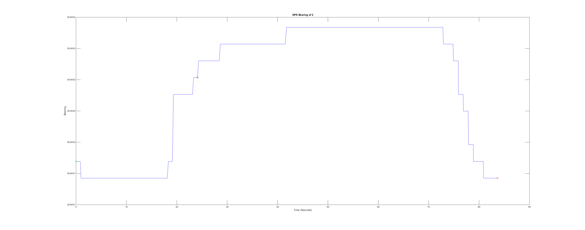
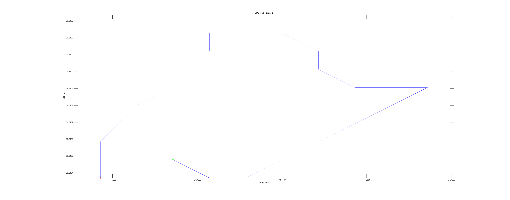 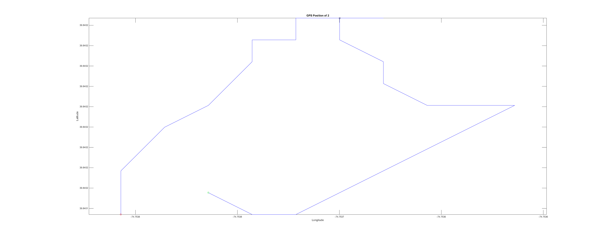 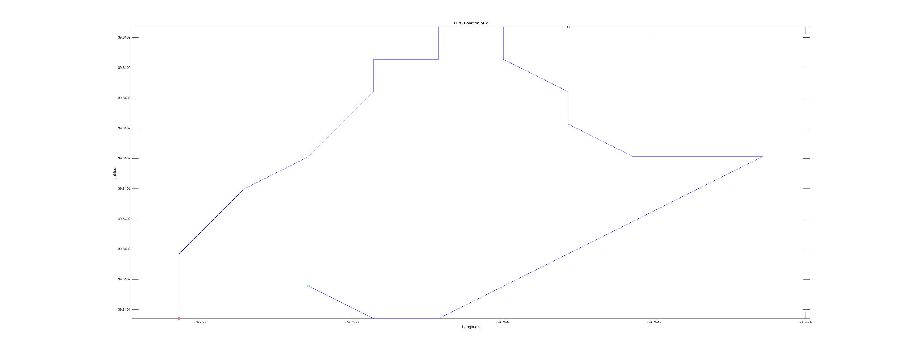 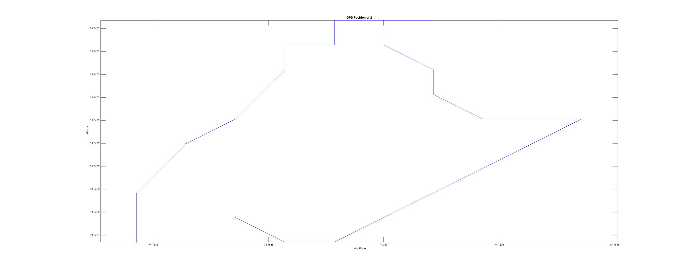 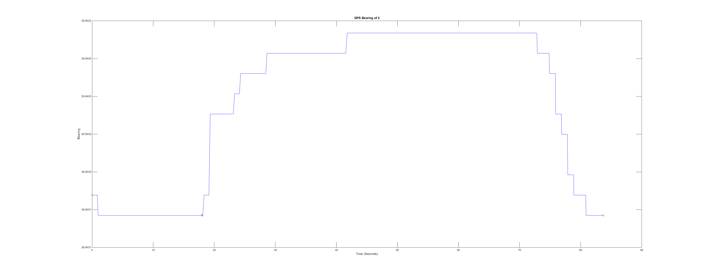 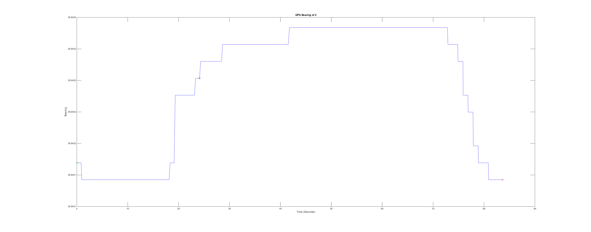 Plot Data (Multiple Tracks)
a = 1; b = 2;
data_a = set{a};
data_b = set{b};
fprintf('Plotting Dataset %.0f with %.0f\n', a, b);
step = ceil((1/plot_step_scale)*length(data_a));
for t = 1:step:length(data_a)
figure('units','normalized','outerposition',[0 0 1 1]);
plot(... %Data A:
data_a(:,2), data_a(:,1), '-b', ... %track points Xlat, Ylong
data_a(1,2), data_a(1,1), 'og', ... %starting point
data_a(end,2), data_a(end,1), 'or', ... %ending point
data_a(t,2), data_a(t,1), 'ok', ... %current time
... %Data B:
data_b(:,2), data_b(:,1), '-k', ... %track points Xlat, Ylong
data_b(1,2), data_b(1,1), 'og', ... %starting point
data_b(end,2), data_b(end,1), 'or', ... %ending point
data_b(t,2), data_b(t,1), 'ok'); %current time
xlabel('Longitude'); ylabel('Latitude'); axis square; axis equal;
title(sprintf('GPS Position of %.0f and %.0f', a,b) );
end
bearing_size = col{1}; %1:length(data_a(:,3));
for t = 1:step:length(data_a)
figure('units','normalized','outerposition',[0 0 1 1]);
plot(... % Data A:
bearing_size, data_a(:,3), '-b', ... %bearing over time
bearing_size(1), data_a(1,3), 'og', ... %starting point
bearing_size(end), data_a(end,3), 'or', ... %ending point
bearing_size(t), data_a(t,3), 'ok', ... %current time
... % Data B:
bearing_size, data_b(:,3), '-k', ... %bearing over time
bearing_size(1), data_b(1,3), 'og', ... %starting point
bearing_size(end), data_b(end,3), 'or', ... %ending point
bearing_size(t), data_b(t,3), 'ok'); %current time
xlabel('Time (Seconds)'); ylabel('Bearing');
title(sprintf('GPS Bearing of %.0f and %.0f', a,b) );
end
Plotting Dataset 1 with 2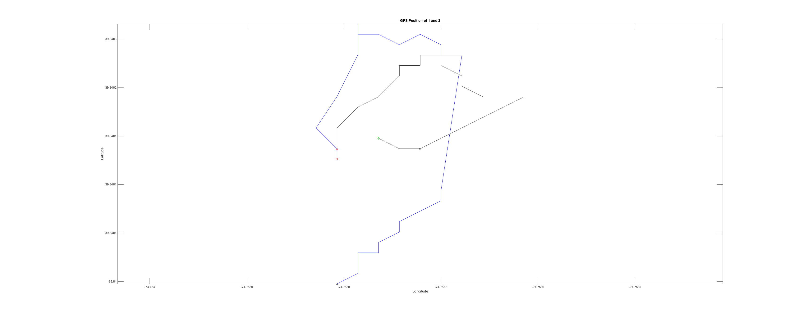 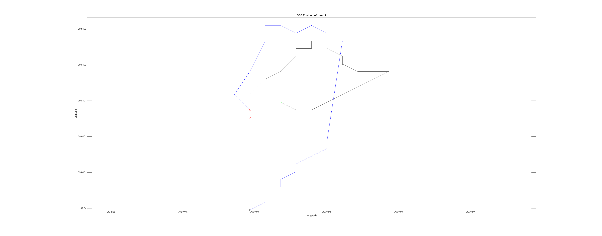 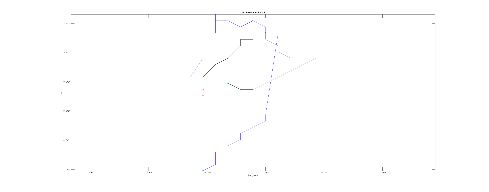 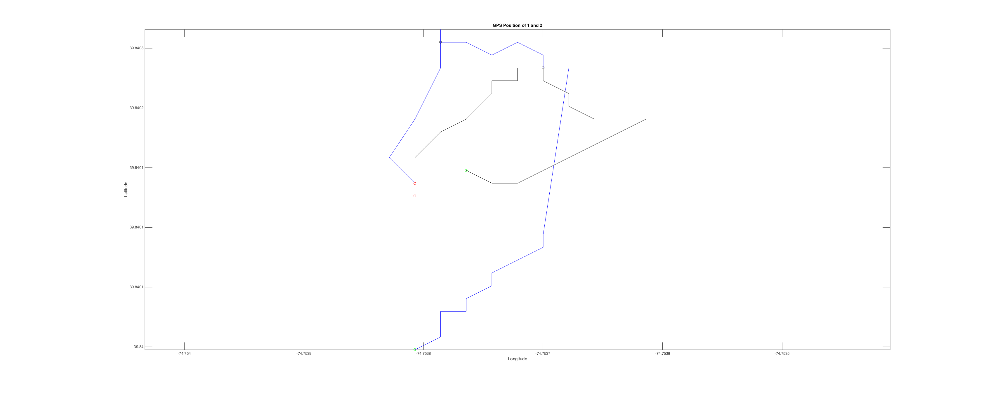
 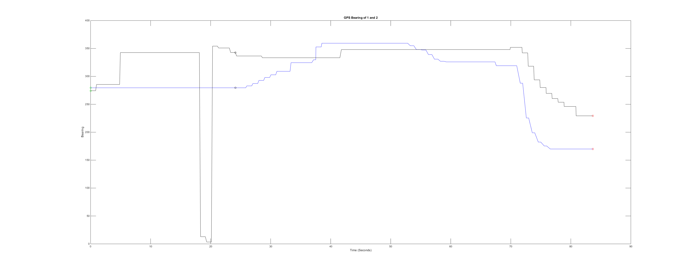
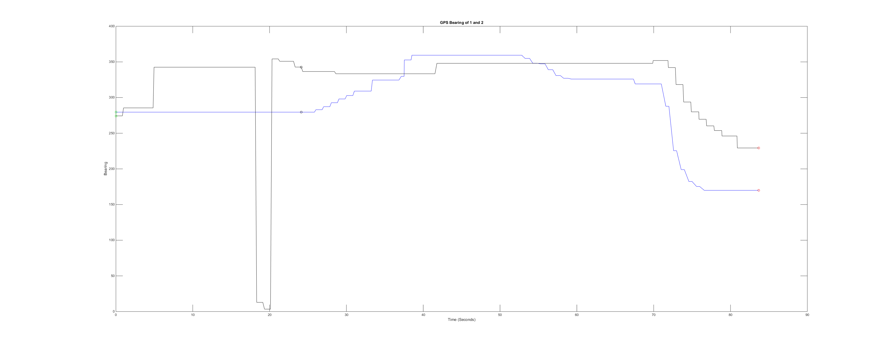